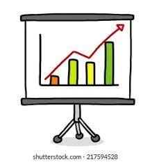

Students who experience bullying are prone to depression, anxiety, sleeping difficulty, lower academic achievement, and even dropping out of school in extreme cases.
Bullying can come in many ways, shape, or form. It includes verbal bullying: victims are taunted or teased, physical bullying: victims are being punched or pushed, psychological bullying: victims are gossiped about and excluded from activities so that they feel bad for themselves, and cyberbullying: bullies on the internet and social media who send mean texts, post insults, or make rude comments. Cyberbullies may even post embarrassing personal information, pictures, and videos on the internet.

Did you know that one out of every five students are reported to being bullied? In fact, of those who reported that they're being bullied, 13% were made fun of, 13% were the subject of rumours, 5% were pushed, shoved, tripped or spat on, and 5% were excluded from activities on purpose
If you're the victim, here are some things you can do: telling a trusted adult, ignoring the bully and walking away, trying to talk to the bully, phone a helpline such as Kids Help Phone, and talk about it to someone you trust.
If a friend or person you know is being bullied, here are some things you can do: encouraging that friend to tell a trusted adult, standing up for your friend, letting your friend know that you're supporting them, encourage them to screenshot/report/block if they're subject to cyberbullying, keep them in high spirits, and let them know that you're here to listen
Bullies can be both guys and girls and they may be those who enjoy being in control of others, selfish and focused on themselves, poor social skills and have a hard time getting along, lack empathy, and are often insecure and bully others to make themselves feel better.